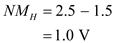
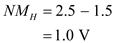
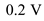
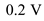

Determine the value of high-input noise margin.

Substitute  for
for  and
and  for
for  in the equation.
in the equation.

Thus, the value of high-input noise margin,  is
is .
.
Determine the value of high-input noise margin.
Substitute for and for in the equation.

Thus, the value of high-input noise margin, is.
Determine the value of low-input noise margin.

Substitute  for
for  and  for
and  for  in the equation.
in the equation.
Thus, the value of low-input noise margin,  is
is .
.